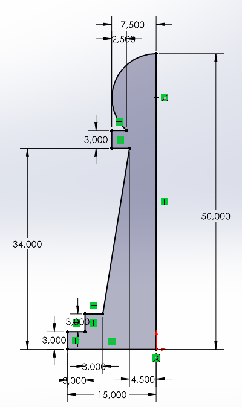

Nous avons modélisé grâce au logiciel « solidworks »

Pièce réalisé grâce a solidworks
Pièces réalisés :
- Un dé
- un aileron
- support a pique
- support a ballon
Extraits de la vidéo tuto pour le dé
Tuto pour l'impression 3D Nous avons modéliser graçe au logiciel "soliwork" l'impression 3D ne vas pas se faire directement depuis solidwork,mais avec un autre type de logiciel qu'on appelle un slicer. Le slicer va analyser le volume que l'on souhaite,imprimer en 3D et va le décomposer en un ensemble de couches superposées.Chaque couche correspond a un passage de l'imprimante losque celle ci va déposer de la matière pour imprimer l'objet
Slicer:L'un des formats de fichier souvent utilisé par les slicer est le format stl. la premier étape consiste donc a générer les fichiers STL correspondant au pièce que vous souhaiter imprimer: dans solidworks, ouvrir la pièce que vous voulez imprimer. aller dans fichier et enregistrer tous. Dans le menu pour enregistrer , cliquer sur type et aller chercher le format STL. Cliquer sur Enregistrer. Cliquer sur Oui pour valider l'enregistrement.
Nous travaillons actuellement sur la création de pièces d'échecs
Aide pour fabriquer un pion:
-Démarrer une nouvelle pièce dans solidworks
-Commencer une esquisse sur le plan de face
-Reproduire l'esquisse ci-dessous :

Projet Final le but du projet final est de crée une voiture télécommandée a l'aide du logiciel "Arduino".
Pour en savoir plus:
quesque Arduino et à quoi sert-il?